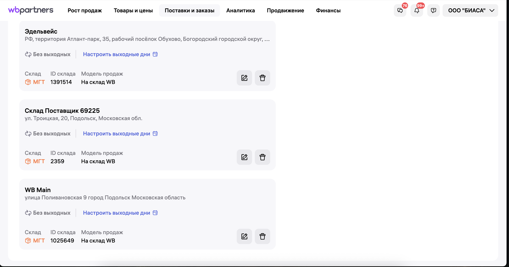
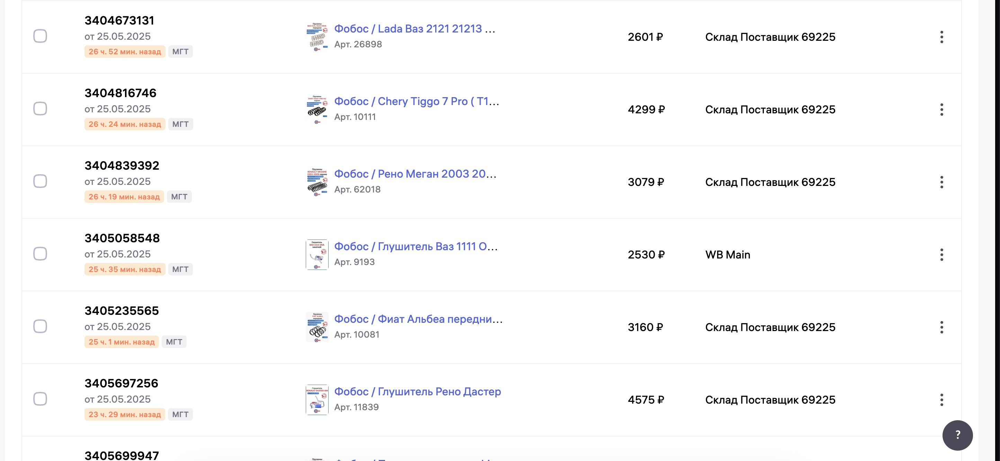

Для реализации разделения остатков на Складской сток и Партнерский сток почти на всех
маркетплейсах предусмотрена функция создания мультискладов.
Мультисклады - это возможность помимо основного склада создать дополнительный. На примере Biasa, на ВБ был
создан склад "2359" и склад "main" (см скрин)

"2359" - виртуальный склад, на который через 1С и API передается сток поставщика, а на склад "main"
передается
сток с ФФ (физические остатки)
Q: Почему нельзя сделать 1 склад и дать на него все имеющиеся остатки?
A: Технически, можно. Однако если вы хотите четко разграничить продажи со своего склада и продажи
со склада постащика - вам жизненно необходимо иметь 2 склада.
Во первых, чтобы поставщик нужный товар привез необходимо четко дать понять, какие позиции мы от него ждем
А как понять что нужно заказать, если все заказы "безликие" и идут на один и тот же склад?
Только вручную, сверяясь по дате заказа и дате крайней закупки у поставщика, пытаясь вычленить то, что было
заказано ранее
от того, что нужно заказать сейчас.
Во вторых, представим ситуацию, когда у вас есть 2 разных стока пружины с артикулом 53006:
Вы создали единственный склад и льете на него остатки и со своего склада и с склада поставщика
Мало того, что это не удобно с точки зрения заказов поставщику, это еще и ломает ваш рейтинг на площадках
Например, на вашем складе остаток пружины с артикулом 53006 - 0 шт.
А на складе поставщика - 50 ед.
В таком случае, если вы передаете остатки с автообновлением по API, то сток одного склада будет перебивать сток
другого склада
Соответственно, товар на маркетплейсах будет появляться и пропадать с периодичностью раз в минуту (в зависимости
от софта
интервалы могут быть другие)
А при работе с 2-мя виртуальными складами, они будут работать обособленно друг от друга. Это позволит четко
отслеживать заказы
которые требуют обеспечения, а так же будет работать корректно с точки зрения API
